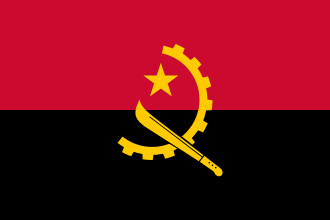
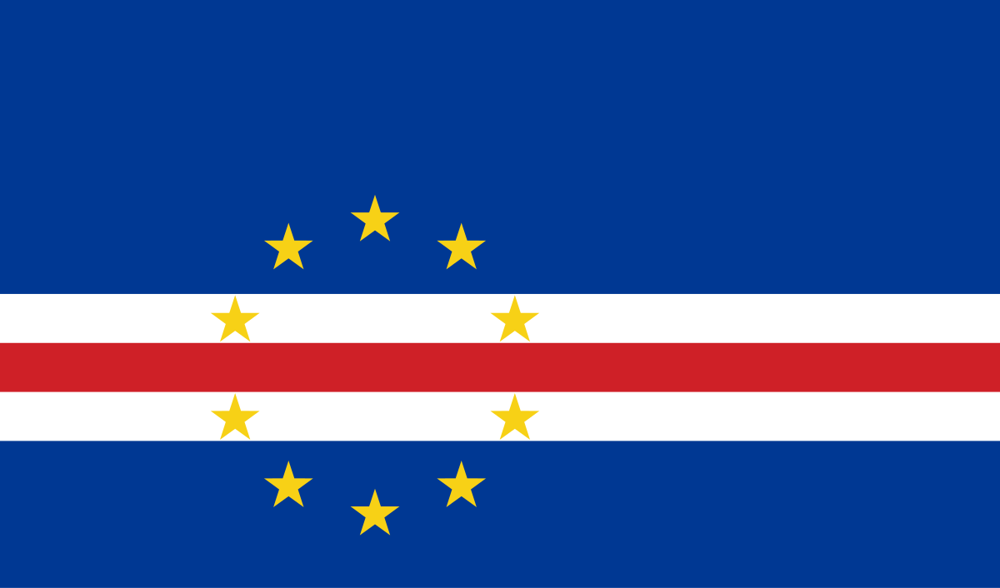
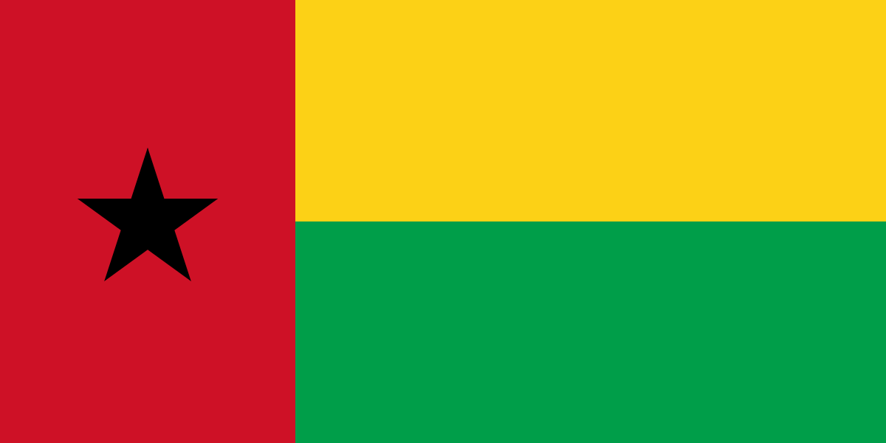
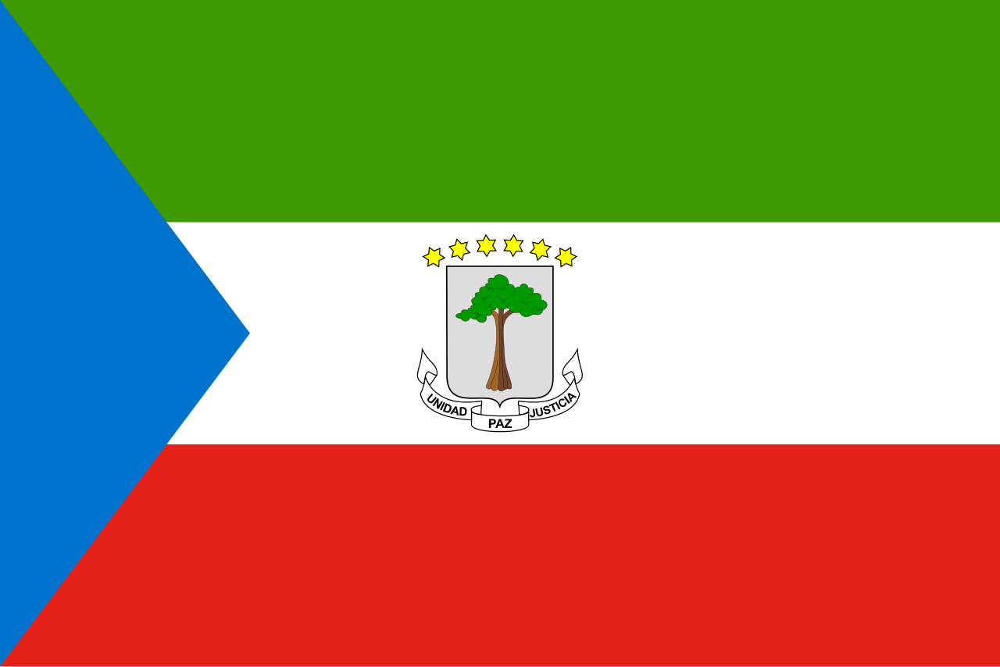
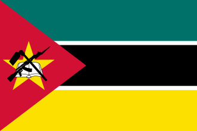
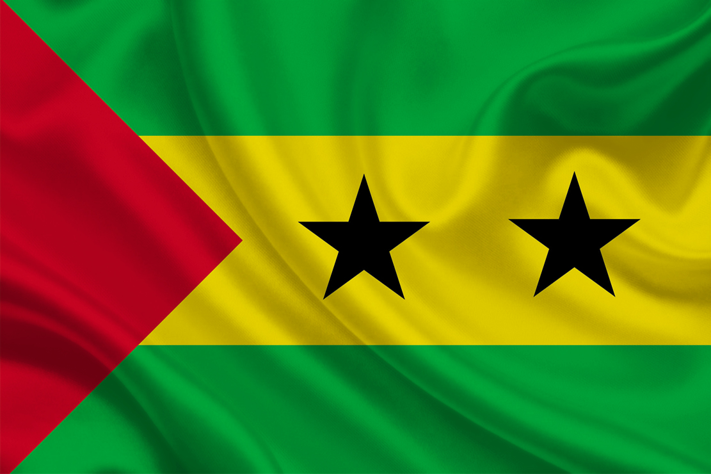
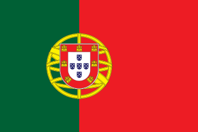
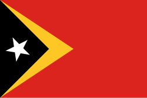

Angola
Geografia: Planícies, desertos no sul e florestas tropicais no norte. O rio Kwanza é destaque.
Curiosidade: O semba angolano influenciou diretamente o samba brasileiro.
Cabo Verde
Geografia: Arquipélago vulcânico com clima árido e paisagens montanhosas.
Curiosidade: A morna é o gênero musical típico, imortalizado por Cesária Évora.
Guiné-Bissau
Geografia: Manguezais e ilhas no arquipélago dos Bijagós. Clima tropical úmido.
Curiosidade: Cultura marcada por rituais tradicionais e línguas locais.
Guiné Equatorial
Geografia: Parte continental e ilhas como Bioko. Rica em petróleo.
Curiosidade: O português é oficial, mas pouco falado; adotado por razões diplomáticas.
Moçambique
Geografia: Longa costa no Oceano Índico e o rio Zambeze. Praias paradisíacas.
Curiosidade: A marrabenta é um estilo musical popular com influência bantu.
São Tomé e Príncipe
Geografia: Arquipélago equatorial com florestas densas e montanhas vulcânicas.
Curiosidade: Um dos países mais biodiversos proporcionalmente ao tamanho.
Brasil

Geografia: Diversidade de biomas: Amazônia, Cerrado, Pantanal, Mata Atlântica, Caatinga e Pampas.
Curiosidade: Maior população lusófona do mundo e único país da América do Sul que fala português.
Portugal
Geografia: Serras, planícies e costa atlântica. Inclui Madeira e Açores.
Curiosidade: Berço das grandes navegações que espalharam o português pelo mundo.
Timor-Leste
Geografia: Montanhoso, com clima tropical e belas praias. Fica na ilha de Timor.
Curiosidade: Cultura com influências portuguesas e indonésias; o tétum é cooficial.